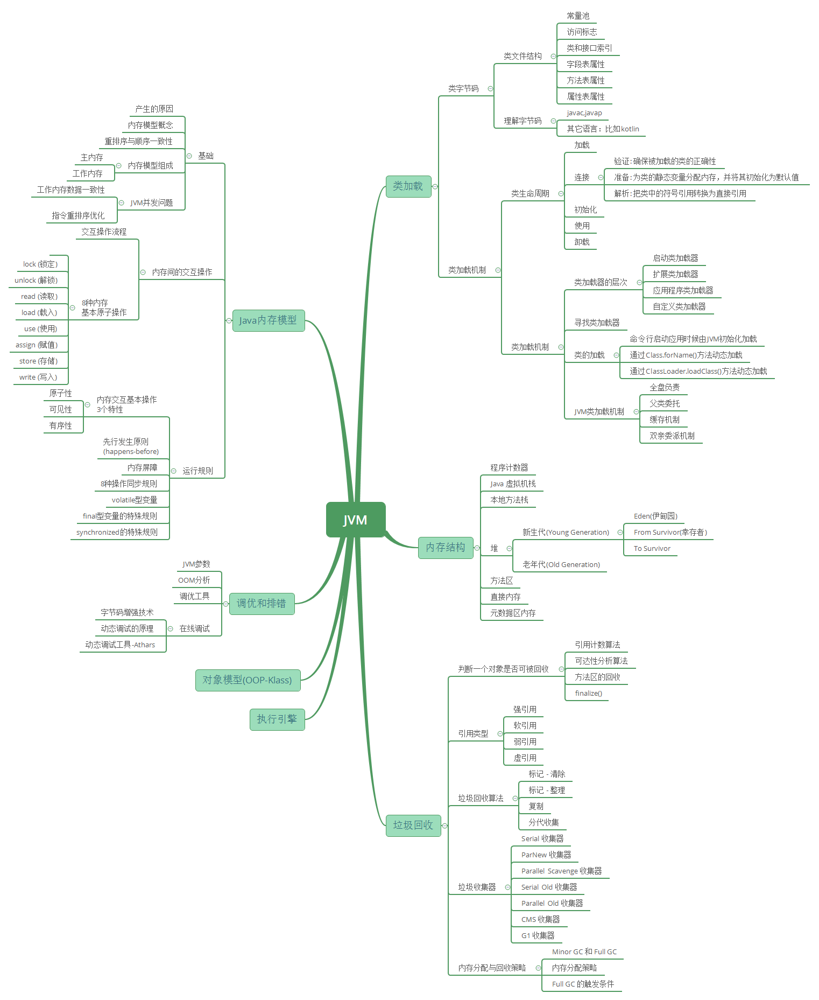
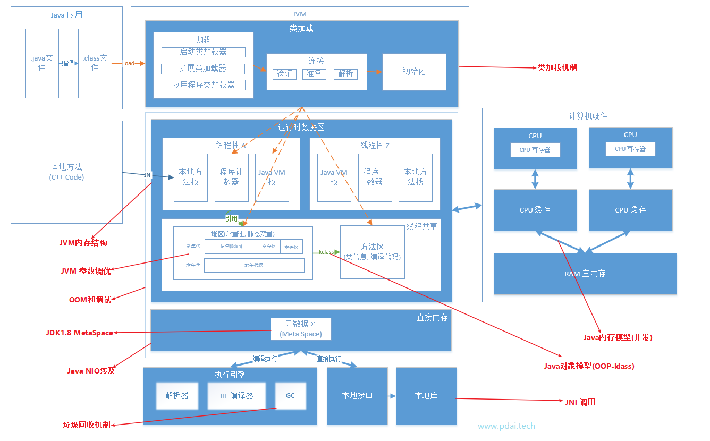
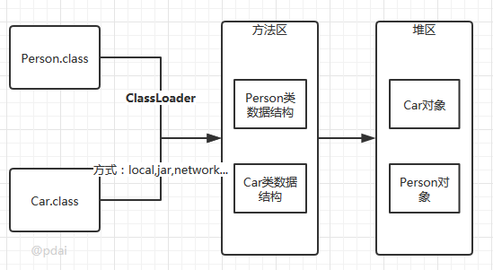
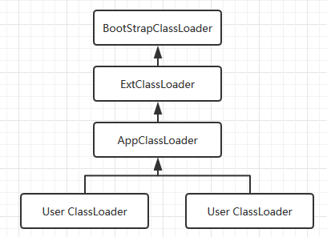
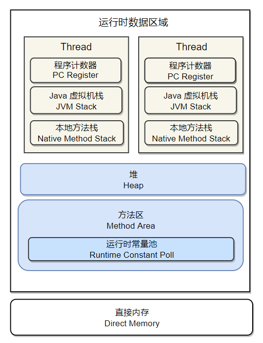
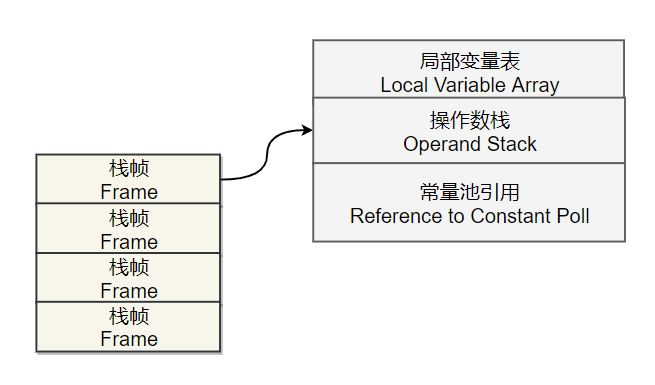

Java JVM
JVM 相关知识体系
本文是构建JVM核心知识点全局知识体系
文章内容主要是学习笔记，来源：https://www.pdai.tech/md/java/jvm/java-jvm-class.html
知识体系

学习要点
不同的虚拟机实现方式上也有差别，如果没有特别指出，这里的JVM指的是sun的HotSpot；不同的JDK版本略有差别，这里主要以1.8

JVM 基础 - 类字节码详解
多语言编译为字节码在JVM运行
计算机是不能直接运行java代码的，必须要先运行java虚拟机，再由java虚拟机运行编译后的java代码。这个编译后的java代码，就是本文要介绍的jav字节码。
为什么jvm不能直接运行java代码呢，这是因为在cpu层面看来计算机中所有的操作都是一个个指令的运行汇集而成，java是高级语言，只有人类才能理解其逻辑，计算机是无法识别的。所以java代码必须要先编译成字节码文件，jvm才能正确识别代码转换后的指令并将其运行。
- java代码间接翻译成字节码，储存字节码的文件再交由运行在不同平台上的jvm虚拟机去读取执行，从而实现一次编写，到处运行的目的。
- jvm也不再只支持java，由此衍生出了许多基于jvm的编程语言，比如groovy，scala，kotlin等等。

Java字节码文件
class文件本质上一个以8位字节为基础单位的二进制流，各个数据项目按照严格顺序紧凑的排列在class文件中。jvm根据其特定的规则解析该二进制数据，从而得到相关信息。
class文件采用一种伪结构来存储数据，它有两种类型：无符号数和表。这里暂不详细的讲。
本文将通过简单的java例子编译后的文件来理解。
class文件的结构属性
在理解之前先从整体看下java字节码文件包含了哪些类型的数据。

从一个例子开始
下面以一个简单的例子来逐步讲解字节码。
1 | //Main.java |
通过以下命令，可以在当前所在路径下生成一个Main.class文件
1 | javac Main.java |
以文本的形式打开生成的class文件，内容如下：
1 | cafe babe 0000 0034 0013 0a00 0400 0f09 |
文件开头的4个字节(“cafe babe”)称之为
魔数，唯有以”cafe babe”开头的class文件方可被虚拟机所接受，这4个字节就是字节码文件的身份识别。0000是编译器jdk版本的次版本号0，0034转化为十进制是52,是主版本号，java的版本号从45开始，除1.0和1.1都是使用45.x外,以后每升一个大版本，版本号加一。也就是说，编译生成该class文件的jdk版本为1.8.0。
继续往下是常量池… 知道是这么分析的就可以了，然后我们通过工具反编译字节码文件继续去看。
反编译字节码文件
使用到java内置的一个反编译工具javap可以反编译字节码文件，用法：javap
其中
1 | -help --help -? 输出此用法消息 |
输入命令 javap -v -p Main.class 查看输出内容
1 | Classfile /E:/JavaCode/TestProj/out/production/TestProj/com/rhythm7/Main.class |
字节码文件信息
开头的7行信息包括：Class文件当前所在位置，最后修改时间，文件大小，MD5值，编译自哪些文件，类的权限定名，jdk次版本号，主版本号。
然后紧接这的是该累的访问标志：ACC_PUBLIC,ACC_SUPER，访问标志的含义如下：
| 标志名称 | 标志值 | 含义 |
|---|---|---|
| ACC_PUBLIC | 0x0001 | 是否为Public类型 |
| ACC_FINAL | 0x0010 | 是否被声明为final，只有类可以设置 |
| ACC_SUPER | 0x0020 | 是否允许使用invokespecial字节码指令的新语义． |
| ACC_INTERFACE | 0x0200 | 标志这是一个接口 |
| ACC_ABSTRACT | 0x0400 | 是否为abstract类型，对于接口或者抽象类来说，次标志值为真，其他类型为假 |
| ACC_SYNTHETIC | 0x1000 | 标志这个类并非由用户代码产生 |
| ACC_ANNOTATION | 0x2000 | 标志这是一个注解 |
| ACC_ENUM | 0x4000 | 标志这是一个枚举 |
常量池
Constant pool :常量池
常量池可以理解为Class文件中的资源仓库。主要存放的是两大类常量：字面量（Lietral）和符号引用（Symbolic References）。字面量类似于java中的常量概念，如文本字符串，final常量等，而符号引用则属于编译原理方面的概念，包括以下三种：
- 类和接口的全限定名
- 字段的名称和描述符号
- 方法的名称和描述符
不同于C/C++，jvm是在加载class文件的时候才进行的动态链接，也就是说这些子弹和方法符号引用只有在运行期转换后才能获得真正的内存入口地址。当虚拟机运行时，需要从常量池获得对应的符号引用，再在类创建或者运行时解析并翻译到具体的内存地址中。直接通过反编译文件来查看字节码内容：
1 | #1 = Methodref #4.#18 // java/lang/Object."<init>":()V |
第一个常量是一个方法定义，指向了第4和第18个常量。以此类推查看第4和第18个常量。最后可以拼接成第一个常量右侧的注释内容：
1 | java/lang/Object."<init>":()V |
这段可以理解为该类的实例构造器的声明，由于main类没有重写构造方法，所以调用的是父类的构造方法。此处也说明了main类的直接父类是Object。该方法默认返回值是V，也就是void，无返回值。
第二个常量同理可得：
1 | #2 = Fieldref #3.#19 // com/rhythm7/Main.m:I |
复制代码此处声明了一个字段m，类型为I，I即是int类型。关于字节码的类型对应如下：
| 标识字符 | 含义 |
|---|---|
| B | 基本类型byte |
| C | 基本类型char |
| D | 基本类型double |
| F | 基本类型float |
| I | 基本类型int |
| J | 基本类型int |
| S | 基本类型short |
| Z | 基本类型boolean |
| V | 特殊类型void |
| L | 对象类型，以分号结尾，如Ljava/lang/Object; |
对于数组类型，每一位使用一个前置的[字符来描述，如定义一个java.lang.String[]/[]类型的二维数组，将被记录为[[Ljava/lang/String;
方法表集合
在常量池之后的是对类内部的方法描述，在字节码中以表的集合形式表现，暂且不管字节码文件的16进制文件内容如何，我们直接看反编译后的内容。
1 |
|
此处声明了一个私有变量m，类型为int，返回值为int。
1 | public com.rhythm7.Main(); |
这里是构造方法：Main()，返回值为void，公开方法。
code内的主要属性为：
- stack: 最大操作数栈，JVM运行时会根据这个值来分配栈帧(Frame)中的操作栈深度,此处为1
- locals: 局部变量所需的存储空间，单位为Slot, Slot是虚拟机为局部变量分配内存时所使用的最小单位，为4个字节大小。方法参数(包括实例方法中的隐藏参数this)，显示异常处理器的参数(try catch中的catch块所定义的异常)，方法体中定义的局部变量都需要使用局部变量表来存放。值得一提的是，locals的大小并不一定等于所有局部变量所占的Slot之和，因为局部变量中的Slot是可以重用的。
- args_size: 方法参数的个数，这里是1，因为每个实例方法都会有一个隐藏参数this
- attribute_info: 方法体内容，0,1,4为字节码”行号”，该段代码的意思是将第一个引用类型本地变量推送至栈顶，然后执行该类型的实例方法，也就是常量池存放的第一个变量，也就是注释里的”java/lang/Object.””😦)V”, 然后执行返回语句，结束方法。
- LineNumberTable: 该属性的作用是描述源码行号与字节码行号(字节码偏移量)之间的对应关系。可以使用 -g:none 或-g:lines选项来取消或要求生成这项信息，如果选择不生成LineNumberTable，当程序运行异常时将无法获取到发生异常的源码行号，也无法按照源码的行数来调试程序。
- LocalVariableTable: 该属性的作用是描述帧栈中局部变量与源码中定义的变量之间的关系。可以使用 -g:none 或 -g:vars来取消或生成这项信息，如果没有生成这项信息，那么当别人引用这个方法时，将无法获取到参数名称，取而代之的是arg0, arg1这样的占位符。 start 表示该局部变量在哪一行开始可见，length表示可见行数，Slot代表所在帧栈位置，Name是变量名称，然后是类型签名。
同理可以分析Main类中的另一个方法”inc()”:
方法体内的内容是：将this入栈，获取字段#2并置于栈顶, 将int类型的1入栈，将栈内顶部的两个数值相加，返回一个int类型的值。
kotlin 函数扩展的实现
kotlin提供了扩展函数的语言特性，借助这个特性，我们可以给任意对象添加自定义方法。
以下示例为Object添加”sayHello”方法
1 |
|
编译后，使用javap查看生成SayHelloKt.class文件的字节码。
1 |
|
观察头部发现,koltin为文件SayHello生成了一个类，类名”com.rhythm7.SayHelloKt”.
由于我们一开始编写SayHello.kt时并不希望SayHello是一个可实例化的对象类，所以，SayHelloKt是无法被实例化的，SayHelloKt并没有任何一个构造器。
再观察唯一的一个方法：发现Any.sayHello()的具体实现是静态不可变方法的形式:
1 | public static final void sayHello(java.lang.Object); |
所以当我们在其他地方使用Any.sayHello()时，事实上等同于调用java的SayHelloKt.sayHello(Object)方法。
顺便一提的是，当扩展的方法为Any时，意味着Any是non-null的，这时，编译器会在方法体的开头检查参数的非空，即调用 kotlin.jvm.internal.Intrinsics.checkParameterIsNotNull(Object value, String paramName) 方法来检查传入的Any类型对象是否为空。如果我们扩展的函数为Any?.sayHello()，那么在编译后的文件中则不会有这段字节码的出现。
JVM 基础 - Java 类加载机制
类的生命周期
其中类的加载过程包括了加载，校验，准备，解析，初始化五个阶段。在这五个阶段中，加载、验证、准备和初始化这四个阶段发生的顺序是确定的，*而解析阶段则不一定，它在某些情况下可以在初始化阶段之后开始，这是为了支持Java语言的运行时绑定(也成为动态绑定或晚期绑定)*。另外注意这里的几个阶段是按顺序开始，而不是按顺序进行或完成，因为这些阶段通常都是互相交叉地混合进行的，通常在一个阶段执行的过程中调用或激活另一个阶段。

类的加载: 查找并加载类的二进制数据
加载时类加载的第一阶段，在加载阶段，虚拟机需要完成三件事情：
- 通过类的全限定名来获取其定义的二进制流。
- 将这个字节流所代表的静态储存结构转化为方法区的运行时数据结构。
- 在java堆中，生成一个java.lang.Class对象，作为对方法区中这些数据的访问入口。

相对于类加载的其他阶段而言，加载阶段(准确地说，是加载阶段获取类的二进制字节流的动作)是可控性最强的阶段，因为开发人员既可以使用系统提供的类加载器来完成加载，也可以自定义自己的类加载器来完成加载。
加载阶段完成后，虚拟机外部的 二进制字节流就按照虚拟机所需的格式存储在方法区之中，而且在Java堆中也创建一个java.lang.Class类的对象，这样便可以通过该对象访问方法区中的这些数据。
类加载器并不需要等到某个类被“首次主动使用”时再加载它，JVM规范允许类加载器在预料某个类将要被使用时就预先加载它，如果在预先加载的过程中遇到了.class文件缺失或存在错误，类加载器必须在程序首次主动使用该类时才报告错误(LinkageError错误)如果这个类一直没有被程序主动使用，那么类加载器就不会报告错误。
加载.Class文件方式
- 从本地系统中直接加载
- 通过网络下载.class文件
- 从zip，jar等归档文件中加载.class文件
- 从专有数据库中提取.class文件
- 将Java源文件动态编译为.class文件
连接
验证: 确保被加载的类的正确性
验证是连接阶段的第一步，这一阶段的目的是为了确保Class文件的字节流中包含的信息符合当前虚拟机的要求，并且不会危害虚拟机自身的安全。验证阶段大致会完成4个阶段的检验动作:
文件格式验证: 验证字节流是否符合Class文件格式的规范；例如: 是否以0xCAFEBABE开头、主次版本号是否在当前虚拟机的处理范围之内、常量池中的常量是否有不被支持的类型。元数据验证: 对字节码描述的信息进行语义分析(注意: 对比javac编译阶段的语义分析)，以保证其描述的信息符合Java语言规范的要求；例如: 这个类是否有父类，除了java.lang.Object之外。字节码验证: 通过数据流和控制流分析，确定程序语义是合法的、符合逻辑的。符号引用验证: 确保解析动作能正确执行。
验证阶段是非常重要的，但不是必须的，它对程序运行期没有影响，如果所引用的类经过反复验证，那么可以考虑采用
-Xverifynone参数来关闭大部分的类验证措施，以缩短虚拟机类加载的时间。
准备: 为类的静态变量分配内存，并将其初始化为默认值
准备阶段是正式为类变量分配内存并赋初始值的阶段。这些内存都将在方法区中分配。对于该阶段有几点需要注意：
这时候进行内存分配的只有静态的类变量，而不包括实例变量，实例变量会在对象初始化的过程中分配在堆中。
这里所设置的初始值通常情况下是数据类型默认的零值(如
0、0L、null、false等)，而不是被在Java代码中被显式地赋予的值。
假设一个类变量的定义为: public static int value = 3；那么变量value在准备阶段过后的初始值为0，而不是3，因为这时候尚未开始执行任何Java方法，而把value赋值为3的put static指令是在程序编译后，存放于类构造器<clinit>()方法之中的，所以把value赋值为3的动作将在初始化阶段才会执行。
这里还需要注意如下几点
- 对于基本数据类型来说，对于类变量（static）和全局变量，如果不显式的对其赋值而直接操作，则系统会为其默认的赋予0值，而对于局部变量来说，在使用前必须显式的为其赋值，否则编译不通过。
- 对于static final 同时修饰的变量，必须显式的赋值，否则编译无法通过；而只被final修饰的常量则可以在声明的时候赋值也可以在使用的时候赋值，总之，在使用前必须为其显式地赋值，系统不会为其赋予默认零值。
- 对于引用数据类型
reference来说，如数组引用、对象引用等，如果没有对其进行显式地赋值而直接使用，系统都会为其赋予默认的零值，即null。 - 如果在数组初始化时没有对数组中的各元素赋值，那么其中的元素将根据对应的数据类型而被赋予默认的零值。
- 如果类字段的字段属性表中存在ConstantValue属性，即同时被final和static修饰，那么在准备阶段变量value就会被初始化为ConstValue属性所指定的值。假设上面的类变量value被定义为:
public static final int value = 3；编译时Javac将会为value生成ConstantValue属性，在准备阶段虚拟机就会根据ConstantValue的设置将value赋值为3。我们可以理解为static final常量在编译期就将其结果放入了调用它的类的常量池中
解析: 把类中的符号引用转换为直接引用
解析阶段是虚拟机将常量池内的符号引用替换为直接引用的过程，解析动作主要针对类或接口、字段、类方法、接口方法、方法类型、方法句柄和调用点限定符7类符号引用进行。符号引用就是一组符号来描述目标，可以是任何字面量。
直接引用就是直接指向目标的指针、相对偏移量或一个间接定位到目标的句柄。
初始化
初始化，为类的静态变量赋予正确的初始值，JVM负责对类进行初始化，主要对类变量进行初始化。在Java中对类变量进行初始值设定有两种方式:
- 声明类变量是指定初始值
- 使用静态代码块为类变量指定初始值
JVM初始化步骤
- 假设这个类还没有加载和连接，则会先对该类进行加载和连接
- 如果该类父类还没有初始化，则会先对父类进行初始化（又会进行上一步的判断）
- 假如类中有初始化语句，则系统依次执行这些初始化语句
类初始化时机: 只有当对类的主动使用的时候才会导致类的初始化，类的主动使用包括以下六种:
创建类的实例，也就是new的方式
访问某个类或接口的静态变量（final变量除外），或者对该静态变量赋值
调用类的静态方法
反射(如Class.forName(“com.pdai.jvm.Test”))
初始化某个类的子类，则其父类也会被初始化
Java虚拟机启动时被标明为启动类的类(Java Test)，直接使用java.exe命令来运行某个主类
类的不会进行初始化包括：
- 调用静态常量，也就是static final修饰的。
- 子类调用父类的静态变量。
- 通过数组定义类引用，不会触发类的初始化。
使用
类访问方法区内的数据结构的接口， 对象是Heap区的数据。
卸载
Java虚拟机将结束生命周期的几种情况
- 执行了System.exit()方法
- 程序正常执行结束
- 程序在执行过程中遇到了异常或错误而异常终止
- 由于操作系统出现错误而导致Java虚拟机进程终止
类加载器， JVM类加载机制
类加载器的层次

注意: 这里父类加载器并不是通过继承关系来实现的，而是采用组合实现的。
站在java虚拟机的角度，只存在两种不同的类加载器：启动类加载器，它使用C++实现（这里仅限于
Hotspot，也就是JDK1.5之后默认的虚拟机，有很多其他的虚拟机是用Java语言实现的）是虚拟机自身的一部分；所有其他的类加载器：这些类加载器都是java语言来实现的，独立于虚拟机之外，并且全部继承自抽象类java.lang.ClassLoader，这些类加载器需要由启动类加载器加载到内存中之后才能去加载其他的类。
站在Java开发人员的角度来看，类加载器可以大致划分为以下三类 :
启动类加载器: Bootstrap ClassLoader，负责加载存放在JDK\jre\lib(JDK代表JDK的安装目录，下同)下，或被-Xbootclasspath参数指定的路径中的，并且能被虚拟机识别的类库(如rt.jar，所有的java.*开头的类均被Bootstrap ClassLoader加载)。启动类加载器是无法被Java程序直接引用的。
扩展类加载器: Extension ClassLoader，该加载器由sun.misc.Launcher$ExtClassLoader实现，它负责加载JDK\jre\lib\ext目录中，或者由java.ext.dirs系统变量指定的路径中的所有类库，开发者可以直接使用扩展类加载器。
应用程序类加载器: Application ClassLoader，该类加载器由sun.misc.Launcher$AppClassLoader来实现，它负责加载用户类路径(ClassPath)所指定的类，开发者可以直接使用该类加载器，如果应用程序中没有自定义过自己的类加载器，一般情况下这个就是程序中默认的类加载器。
应用程序都是由这三种类加载器互相配合进行加载的，如果有必要，我们还可以加入自定义的类加载器。因为JVM自带的ClassLoader只是懂得从本地文件系统加载标准的java class文件，因此如果编写了自己的ClassLoader，便可以做到如下几点:
- 在执行非置信代码之前，自动验证数字签名。
- 动态地创建符合用户特定需要的定制化构建类。
- 从特定的场所取得java class，例如数据库中和网络中。
寻找类加载器
寻找类加载器小例子如下:
1 | package com.pdai.jvm.classloader; |
结果如下:
1 | sun.misc.Launcher$AppClassLoader@64fef26a |
从上面的结果可以看出，并没有获取到ExtClassLoader的父Loader，原因是BootstrapLoader(引导类加载器)是用C语言实现的，找不到一个确定的返回父Loader的方式，于是就返回null。
类的加载
类加载有三种方式:
1、命令行启动应用时候由JVM初始化加载
2、通过Class.forName()方法动态加载
3、通过ClassLoader.loadClass()方法动态加载
1 | package com.pdai.jvm.classloader; |
分别切换加载方式，会有不同的输出结果。
Class.forName()和ClassLoader.loadClass()区别?
Class.forName(): 将类的.class文件加载到jvm中之外，还会对类进行解释，执行类中的static块；
ClassLoader.loadClass(): 只干一件事情，就是将.class文件加载到jvm中，不会执行static中的内容,只有在newInstance才会去执行static块。
Class.forName(name, initialize, loader)带参函数也可控制是否加载static块。并且只有调用了newInstance()方法采用调用构造函数，创建类的对象 。
JVM类加载机制
全盘负责，当一个类加载器负责加载某个Class时，该Class所依赖的和引用的其他Class也将由该类加载器负责载入，除非显示使用另外一个类加载器来载入父类委托，先让父类加载器试图加载该类，只有在父类加载器无法加载该类时才尝试从自己的类路径中加载该类缓存机制，缓存机制将会保证所有加载过的Class都会被缓存，当程序中需要使用某个Class时，类加载器先从缓存区寻找该Class，只有缓存区不存在，系统才会读取该类对应的二进制数据，并将其转换成Class对象，存入缓存区。这就是为什么修改了Class后，必须重启JVM，程序的修改才会生效双亲委派机制, 如果一个类加载器收到了类加载的请求，它首先不会自己去尝试加载这个类，而是把请求委托给父加载器去完成，依次向上，因此，所有的类加载请求最终都应该被传递到顶层的启动类加载器中，只有当父加载器在它的搜索范围中没有找到所需的类时，即无法完成该加载，子加载器才会尝试自己去加载该类。双亲委派机制
- 1、当AppClassLoader加载一个class时，它首先不会自己去尝试加载这个类，而是把类加载请求委派给父类加载器ExtClassLoader去完成。
- 2、当ExtClassLoader加载一个class时，它首先也不会自己去尝试加载这个类，而是把类加载请求委派给BootStrapClassLoader去完成。
- 3、如果BootStrapClassLoader加载失败(例如在$JAVA_HOME/jre/lib里未查找到该class)，会使用ExtClassLoader来尝试加载；
- 4、若ExtClassLoader也加载失败，则会使用AppClassLoader来加载，如果AppClassLoader也加载失败，则会报出异常ClassNotFoundException。
双亲委派代码实现
1 | public Class<?> loadClass(String name)throws ClassNotFoundException { |
双亲委派优势
- 系统类防止内存中出现多份同样的字节码
- 保证Java程序安全稳定运行
自定义类加载器
通常情况下，我们都是直接使用系统类加载器。但是，有的时候，我们也需要自定义类加载器。比如应用是通过网络来传输 Java 类的字节码，为保证安全性，这些字节码经过了加密处理，这时系统类加载器就无法对其进行加载，这样则需要自定义类加载器来实现。自定义类加载器一般都是继承自 ClassLoader 类，从上面对 loadClass 方法来分析来看，我们只需要重写 findClass 方法即可。下面我们通过一个示例来演示自定义类加载器的流程:
1 | package com.pdai.jvm.classloader; |
自定义类加载器的核心在于对字节码文件的获取，如果是加密的字节码则需要在该类中对文件进行解密。由于这里只是演示，我并未对class文件进行加密，因此没有解密的过程。
这里有几点需要注意 :
1、这里传递的文件名需要是类的全限定性名称，即com.pdai.jvm.classloader.Test2格式的，因为 defineClass 方法是按这种格式进行处理的。
2、最好不要重写loadClass方法，因为这样容易破坏双亲委托模式。
3、这类Test 类本身可以被 AppClassLoader 类加载，因此我们不能把com/pdai/jvm/classloader/Test2.class 放在类路径下。否则，由于双亲委托机制的存在，会直接导致该类由 AppClassLoader 加载，而不会通过我们自定义类加载器来加载。
JVM 基础 - JVM 内存结构
Overview

程序计数器
记录正在执行的虚拟机字节码指令的地址(如果正在执行的是本地方法则为空)。
Java 虚拟机栈
每个 Java 方法在执行的同时会创建一个栈帧用于存储局部变量表、操作数栈、常量池引用等信息，从调用直至执行完成的过程，就对应着一个栈帧在 Java 虚拟机栈中入栈和出栈的过程。

可以通过 -Xss 这个虚拟机参数来指定每个线程的 Java 虚拟机栈内存大小:
1 | java -Xss512M HackTheJava |
该区域可能抛出以下异常:
- 当线程请求的栈深度超过最大值，会抛出 StackOverflowError 异常；
- 栈进行动态扩展时如果无法申请到足够内存，会抛出 OutOfMemoryError 异常。
本地方法栈
本地方法一般是用其它语言(C、C++ 或汇编语言等)编写的，并且被编译为基于本机硬件和操作系统的程序，对待这些方法需要特别处理。
本地方法栈与 Java 虚拟机栈类似，它们之间的区别只不过是本地方法栈为本地方法服务。

堆
所有对象都在这里分配内存，是垃圾收集的主要区域(“GC 堆”)。
所有对象都在这里分配内存，是垃圾收集的主要区域(“GC 堆”)。
现代的垃圾收集器基本都是采用分代收集算法，针对不同类型的对象采取不同的垃圾回收算法，可以将堆分成两块:
- 新生代(Young Generation)
- 老年代(Old Generation)
- 也有把方法区称为永生代（Permenent Generation）
新生代可以继续划分成以下三个空间:
- Eden(伊甸园)
- From Survivor(幸存者)
- To Survivor
堆不需要连续内存，并且可以动态增加其内存，增加失败会抛出 OutOfMemoryError 异常。
可以通过 -Xms 和 -Xmx 两个虚拟机参数来指定一个程序的堆内存大小，第一个参数设置初始值，第二个参数设置最大值。
1 | java -Xms1M -Xmx2M HackTheJava |
方法区
用于存放已被加载的类信息、常量、静态变量、即时编译器编译后的代码等数据。
和堆一样不需要连续的内存，并且可以动态扩展，动态扩展失败一样会抛出 OutOfMemoryError 异常。
对这块区域进行垃圾回收的主要目标是对常量池的回收和对类的卸载，但是一般比较难实现。
JDK 1.7 之前，HotSpot 虚拟机把它当成永久代来进行垃圾回收。但是从 JDK 1.7 开始，已经把原本放在永久代的字符串常量池移到 Native Method 中。
运行时常量池
运行时常量池是方法区的一部分。
Class 文件中的常量池(编译器生成的各种字面量（字面量类似于java中的常量概念，如文本字符串，final常量等）和符号引用)会在类加载后被放入这个区域。
除了在编译期生成的常量，还允许动态生成，例如 String 类的 intern()。
直接内存
在 JDK 1.4 中新加入了 NIO 类，它可以使用 Native 函数库直接分配堆外内存，然后通过一个存储在 Java 堆里的 DirectByteBuffer 对象作为这块内存的引用进行操作。
这样能在一些场景中显著提高性能，因为避免了在 Java 堆和 Native 堆中来回复制数据。
JVM 基础 - Java 垃圾收集
垃圾收集主要是针对堆和方法区进行
程序计数器、虚拟机栈和本地方法栈这三个区域属于线程私有的，只存在于线程的生命周期内，线程结束之后也会消失，因此不需要对这三个区域进行垃圾回收。
判断一个对象是否可被回收
1. 引用计数算法
给对象添加一个引用计数器，当对象增加一个引用时计算器+1，当对象减少一个引用时，计算器-1，当对象的引用计算值为0时，表示可被回收。两个对象出现循环引用的情况下，此时引用计数器永远不为 0，导致无法对它们进行回收。
正因为循环引用的存在，因此 Java 虚拟机不使用引用计数算法。
1 | public class ReferenceCountingGC { |
2. 可达性分析算法
通过 GC Roots 作为起始点进行搜索，能够到达到的对象都是存活的，不可达的对象可被回收。

Java 虚拟机使用该算法来判断对象是否可被回收，在 Java 中 GC Roots 一般包含以下内容:
- 虚拟机栈中引用的对象
- 本地方法栈中引用的对象
- 方法区中类静态属性引用的对象
- 方法区中的常量引用的对象
3. 方法区的回收
因为方法区主要存放永久代对象，而永久代对象的回收率比新生代低很多，因此在方法区上进行回收性价比不高。
主要是对常量池的回收和对类的卸载。
在大量使用反射、动态代理、CGLib 等 ByteCode 框架、动态生成 JSP 以及 OSGi 这类频繁自定义 ClassLoader 的场景都需要虚拟机具备类卸载功能，以保证不会出现内存溢出。
类的卸载条件很多，需要满足以下三个条件，并且满足了也不一定会被卸载:
- 该类所有的实例都已经被回收，也就是堆中不存在该类的任何实例。
- 加载该类的 ClassLoader 已经被回收。
- 该类对应的 Class 对象没有在任何地方被引用，也就无法在任何地方通过反射访问该类方法。
可以通过 -Xnoclassgc 参数来控制是否对类进行卸载。
4. finalize()
finalize() 类似 C++ 的析构函数，用来做关闭外部资源等工作。但是 try-finally 等方式可以做的更好，并且该方法运行代价高昂，不确定性大，无法保证各个对象的调用顺序，因此最好不要使用。
当一个对象可被回收时，如果需要执行该对象的 finalize() 方法，那么就有可能通过在该方法中让对象重新被引用，从而实现自救。自救只能进行一次，如果回收的对象之前调用了 finalize() 方法自救，后面回收时不会调用 finalize() 方法。
引用类型
无论是通过引用计算算法判断对象的引用数量，还是通过可达性分析算法判断对象是否可达，判定对象是否可被回收都与引用有关。
Java 具有四种强度不同的引用类型。
1. 强引用
被强引用关联的对象不会被回收。
使用 new 一个新对象的方式来创建强引用。
1 | Object obj = new Object(); |
2. 软引用
被软引用关联的对象只有在内存不够的情况下才会被回收。
使用 SoftReference 类来创建软引用。
1 | Object obj = new Object(); |
3. 弱引用
被弱引用关联的对象一定会被回收，也就是说它只能存活到下一次垃圾回收发生之前。
使用 WeakReference 类来实现弱引用。
1 | Object obj = new Object(); |
4. 虚引用
又称为幽灵引用或者幻影引用。一个对象是否有虚引用的存在，完全不会对其生存时间构成影响，也无法通过虚引用取得一个对象。
为一个对象设置虚引用关联的唯一目的就是能在这个对象被回收时收到一个系统通知。
使用 PhantomReference 来实现虚引用。
1 | Object obj = new Object(); |
垃圾回收算法
1. 标记 - 清除

将存活的对象进行标记，然后清理掉未被标记的对象。
不足:
- 标记和清除过程效率都不高；
- 会产生大量不连续的内存碎片，导致无法给大对象分配内存。
2. 标记 - 整理

让所有存活的对象都向一端移动，然后直接清理掉端边界以外的内存。
3. 复制

将内存划分为大小相等的两块，每次只使用其中一块，当这一块内存用完了就将还存活的对象复制到另一块上面，然后再把使用过的内存空间进行一次清理。
主要不足是只使用了内存的一半。
现在的商业虚拟机都采用这种收集算法来回收新生代，但是并不是将新生代划分为大小相等的两块，而是分为一块较大的 Eden 空间和两块较小的 Survivor 空间，每次使用 Eden 空间和其中一块 Survivor。在回收时，将 Eden 和 Survivor 中还存活着的对象一次性复制到另一块 Survivor 空间上，最后清理 Eden 和使用过的那一块 Survivor。
HotSpot 虚拟机的 Eden 和 Survivor 的大小比例默认为 8:1，保证了内存的利用率达到 90%。如果每次回收有多于 10% 的对象存活，那么一块 Survivor 空间就不够用了，此时需要依赖于老年代进行分配担保，也就是借用老年代的空间存储放不下的对象。
4. 分代收集
现在的商业虚拟机采用分代收集算法，它根据对象存活周期将内存划分为几块，不同块采用适当的收集算法。
一般将堆分为新生代和老年代。
- 新生代使用: 复制算法
- 老年代使用: 标记 - 清除 或者 标记 - 整理 算法
垃圾收集器

以上是 HotSpot 虚拟机中的 7 个垃圾收集器，连线表示垃圾收集器可以配合使用。
- 单线程与多线程: 单线程指的是垃圾收集器只使用一个线程进行收集，而多线程使用多个线程；
- 串行与并行: 串行指的是垃圾收集器与用户程序交替执行，这意味着在执行垃圾收集的时候需要停顿用户程序；并形指的是垃圾收集器和用户程序同时执行。除了 CMS 和 G1 之外，其它垃圾收集器都是以串行的方式执行。
1. Serial 收集器

Serial 翻译为串行，也就是说它以串行的方式执行。
它是单线程的收集器，只会使用一个线程进行垃圾收集工作。
它的优点是简单高效，对于单个 CPU 环境来说，由于没有线程交互的开销，因此拥有最高的单线程收集效率。
它是 Client 模式下的默认新生代收集器，因为在用户的桌面应用场景下，分配给虚拟机管理的内存一般来说不会很大。Serial 收集器收集几十兆甚至一两百兆的新生代停顿时间可以控制在一百多毫秒以内，只要不是太频繁，这点停顿是可以接受的。
2. ParNew 收集器

它是 Serial 收集器的多线程版本。
是 Server 模式下的虚拟机首选新生代收集器，除了性能原因外，主要是因为除了 Serial 收集器，只有它能与 CMS 收集器配合工作。
默认开启的线程数量与 CPU 数量相同，可以使用 -XX:ParallelGCThreads 参数来设置线程数。
3. Parallel Scavenge 收集器
与 ParNew 一样是多线程收集器。
其它收集器关注点是尽可能缩短垃圾收集时用户线程的停顿时间，而它的目标是达到一个可控制的吞吐量，它被称为“吞吐量优先”收集器。这里的吞吐量指 CPU 用于运行用户代码的时间占总时间的比值。
停顿时间越短就越适合需要与用户交互的程序，良好的响应速度能提升用户体验。而高吞吐量则可以高效率地利用 CPU 时间，尽快完成程序的运算任务，主要适合在后台运算而不需要太多交互的任务。
缩短停顿时间是以牺牲吞吐量和新生代空间来换取的: 新生代空间变小，垃圾回收变得频繁，导致吞吐量下降。
可以通过一个开关参数打卡 GC 自适应的调节策略(GC Ergonomics)，就不需要手工指定新生代的大小(-Xmn)、Eden 和 Survivor 区的比例、晋升老年代对象年龄等细节参数了。虚拟机会根据当前系统的运行情况收集性能监控信息，动态调整这些参数以提供最合适的停顿时间或者最大的吞吐量，这种方式称为 。
4. Serial Old 收集器

是 Serial 收集器的老年代版本，也是给 Client 模式下的虚拟机使用。如果用在 Server 模式下，它有两大用途:
- 在 JDK 1.5 以及之前版本(Parallel Old 诞生以前)中与 Parallel Scavenge 收集器搭配使用。
- 作为 CMS 收集器的后备预案，在并发收集发生 Concurrent Mode Failure 时使用。
5. Parallel Old 收集器

是 Parallel Scavenge 收集器的老年代版本。
在注重吞吐量以及 CPU 资源敏感的场合，都可以优先考虑 Parallel Scavenge 加 Parallel Old 收集器。
6. CMS 收集器

CMS(Concurrent Mark Sweep)，Mark Sweep 指的是标记 - 清除算法。
分为以下四个流程:
- 初始标记: 仅仅只是标记一下 GC Roots 能直接关联到的对象，速度很快，需要停顿。
- 并发标记: 进行 GC Roots Tracing 的过程，它在整个回收过程中耗时最长，不需要停顿。
- 重新标记: 为了修正并发标记期间因用户程序继续运作而导致标记产生变动的那一部分对象的标记记录，需要停顿。
- 并发清除: 不需要停顿。
在整个过程中耗时最长的并发标记和并发清除过程中，收集器线程都可以与用户线程一起工作，不需要进行停顿。
具有以下缺点:
- 吞吐量低: 低停顿时间是以牺牲吞吐量为代价的，导致 CPU 利用率不够高。
- 无法处理浮动垃圾，可能出现 Concurrent Mode Failure。浮动垃圾是指并发清除阶段由于用户线程继续运行而产生的垃圾，这部分垃圾只能到下一次 GC 时才能进行回收。由于浮动垃圾的存在，因此需要预留出一部分内存，意味着 CMS 收集不能像其它收集器那样等待老年代快满的时候再回收。如果预留的内存不够存放浮动垃圾，就会出现 Concurrent Mode Failure，这时虚拟机将临时启用 Serial Old 来替代 CMS。
- 标记 - 清除算法导致的空间碎片，往往出现老年代空间剩余，但无法找到足够大连续空间来分配当前对象，不得不提前触发一次 Full GC
7. G1 收集器
G1(Garbage-First)，它是一款面向服务端应用的垃圾收集器，在多 CPU 和大内存的场景下有很好的性能。HotSpot 开发团队赋予它的使命是未来可以替换掉 CMS 收集器。
堆被分为新生代和老年代，其它收集器进行收集的范围都是整个新生代或者老年代，而 G1 可以直接对新生代和老年代一起回收。

G1 把堆划分成多个大小相等的独立区域(Region)，新生代和老年代不再物理隔离。

通过引入 Region 的概念，从而将原来的一整块内存空间划分成多个的小空间，使得每个小空间可以单独进行垃圾回收。这种划分方法带来了很大的灵活性，使得可预测的停顿时间模型成为可能。通过记录每个 Region 垃圾回收时间以及回收所获得的空间(这两个值是通过过去回收的经验获得)，并维护一个优先列表，每次根据允许的收集时间，优先回收价值最大的 Region。
每个 Region 都有一个 Remembered Set，用来记录该 Region 对象的引用对象所在的 Region。通过使用 Remembered Set，在做可达性分析的时候就可以避免全堆扫描。

如果不计算维护 Remembered Set 的操作，G1 收集器的运作大致可划分为以下几个步骤:
- 初始标记
- 并发标记
- 最终标记: 为了修正在并发标记期间因用户程序继续运作而导致标记产生变动的那一部分标记记录，虚拟机将这段时间对象变化记录在线程的 Remembered Set Logs 里面，最终标记阶段需要把 Remembered Set Logs 的数据合并到 Remembered Set 中。这阶段需要停顿线程，但是可并行执行。
- 筛选回收: 首先对各个 Region 中的回收价值和成本进行排序，根据用户所期望的 GC 停顿时间来制定回收计划。此阶段其实也可以做到与用户程序一起并发执行，但是因为只回收一部分 Region，时间是用户可控制的，而且停顿用户线程将大幅度提高收集效率。
具备如下特点:
- 空间整合: 整体来看是基于“标记 - 整理”算法实现的收集器，从局部(两个 Region 之间)上来看是基于“复制”算法实现的，这意味着运行期间不会产生内存空间碎片。
- 可预测的停顿: 能让使用者明确指定在一个长度为 M 毫秒的时间片段内，消耗在 GC 上的时间不得超过 N 毫秒。
内存分配与回收策略
Minor GC 和 Full GC
- Minor GC: 发生在新生代上，因为新生代对象存活时间很短，因此 Minor GC 会频繁执行，执行的速度一般也会比较快。
- Full GC: 发生在老年代上，老年代对象其存活时间长，因此 Full GC 很少执行，执行速度会比 Minor GC 慢很多。
1. 对象优先在 Eden 分配
大多数情况下，对象在新生代 Eden 区分配，当 Eden 区空间不够时，发起 Minor GC。
2. 大对象直接进入老年代
大对象是指需要连续内存空间的对象，最典型的大对象是那种很长的字符串以及数组。
经常出现大对象会提前触发垃圾收集以获取足够的连续空间分配给大对象。
-XX:PretenureSizeThreshold，大于此值的对象直接在老年代分配，避免在 Eden 区和 Survivor 区之间的大量内存复制。
3. 长期存活的对象进入老年代
为对象定义年龄计数器，对象在 Eden 出生并经过 Minor GC 依然存活，将移动到 Survivor 中，年龄就增加 1 岁，增加到一定年龄则移动到老年代中。
-XX:MaxTenuringThreshold 用来定义年龄的阈值。
4. 动态对象年龄判定
虚拟机并不是永远地要求对象的年龄必须达到 MaxTenuringThreshold 才能晋升老年代，如果在 Survivor 中相同年龄所有对象大小的总和大于 Survivor 空间的一半，则年龄大于或等于该年龄的对象可以直接进入老年代，无需等到 MaxTenuringThreshold 中要求的年龄。
5. 空间分配担保
在发生 Minor GC 之前，虚拟机先检查老年代最大可用的连续空间是否大于新生代所有对象总空间，如果条件成立的话，那么 Minor GC 可以确认是安全的。
如果不成立的话虚拟机会查看 HandlePromotionFailure 设置值是否允许担保失败，如果允许那么就会继续检查老年代最大可用的连续空间是否大于历次晋升到老年代对象的平均大小，如果大于，将尝试着进行一次 Minor GC；如果小于，或者 HandlePromotionFailure 设置不允许冒险，那么就要进行一次 Full GC。
Full GC 的触发条件
对于 Minor GC，其触发条件非常简单，当 Eden 空间满时，就将触发一次 Minor GC。而 Full GC 则相对复杂，有以下条件:
1. 调用 System.gc()
只是建议虚拟机执行 Full GC，但是虚拟机不一定真正去执行。不建议使用这种方式，而是让虚拟机管理内存。
2. 老年代空间不足
老年代空间不足的常见场景为前文所讲的大对象直接进入老年代、长期存活的对象进入老年代等。
为了避免以上原因引起的 Full GC，应当尽量不要创建过大的对象以及数组。除此之外，可以通过 -Xmn 虚拟机参数调大新生代的大小，让对象尽量在新生代被回收掉，不进入老年代。还可以通过 -XX:MaxTenuringThreshold 调大对象进入老年代的年龄，让对象在新生代多存活一段时间。